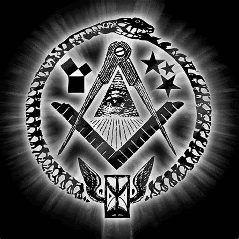

LAS CONSPIRACIONES
En esta pagina encontrarás noticias sobre las conspiraciones, todo tipo de misterio para entretenerte un rato.
Teorias conspirativas - David Trujillo Pajuelo
TEORIAS CONSPIRATIVAS
1ºEl caso del gobierno masónico
Origen de este movimiento conspiranoico
Es una de las teorias más famosas dentro del mundo de la conspiración. Antes de comentar a cerca del origen de este movimiento debemos decir qué es la masonería. Se trata de una organización secreta que clasifica a las personas como entidades denominadas logias de acuerdo con la normativa de la Hermandad. Esta organización tiene algo que ver con la adoración a movimientos satánicos. El origen de la masonería se remonta al siglo 13, cuando un grupo de gremios fundaron esta hermandad. El origen de la creencia a relacionar esta institución con el gobierno viene dada desde hace muchos años atrás. Ahora bien, ¿Qué tiene que ver esto con el gobierno de hoy en día?
Descripción de la creencia y argumentos reales
Esta relación y creencia se combina con el pensamiento del nuevo orden mundial, el ojo que todo lo ve y los illuminatis. Esta creencia afirma que el gobierno nos manipula para su bien, solo piensan en el poder, y el planeta esta dirigido por una orden que controla absolutamente todo el mundo. Lo cierto es que, refutando todo esto, algunos políticos se encuentran en las logias, como tambien algunos médicos, profesores, abogados, etc. Pero esto no tiene una influencia en la política ya que se centra en adorar una institución que se mueve por medio de una ideología que domina el mundo. Por ende, no existe ni existirá un nuevo orden mundial
en el ámbito gubernamental. Si que es cierto que el gobierno puede ocultar muchas cosas, es cuestión de creer en ello o no, pero solo sería con la finalidad de no armar un jaleo mundial en la población por cualquier noticia que salga a la luz (como ejemplo, la desvelación de los secretos ocultos del área 51). Una frase que nos puede dar de que pensar y nos da una pista seria según Dan Brown,La mejor conocida era la de los masones, y en ellas sus miembros ascendían a niveles más altos si demostraban que eran capaces de guardar un secreto, lo que lograban mediante una serie de rituales y pruebas de mérito que duraban años. Las pruebas eran cada vez más duras y si se superaban, el candidato alcanzaba el grado trigésimo segundo de la masonería.
.En cualquier caso, esta teoría conspiranoica sigue dejando dudas en la población ya que no esta resuelta ni jamás saldrá a la luz la verdad
